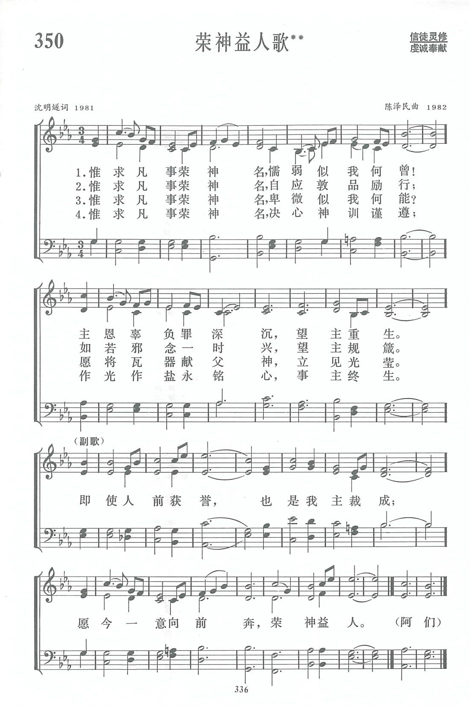

|
|
讚美詩(新編) 第350首《榮神益人歌》 |
|
|
|
|
https://www.zanmeishige.com/tab/14023.html?songbook=1&index=350
 |
|
|
|
|

第350首 荣神益人歌** _沈明燧 HONOUR GOD , BENEFIT MEN
经文：“你们的光也当这样照在人前，叫他们看见你们的好行为，便将荣耀归给你们在天上的父”(太5—16)。
这是沈明燧牧师(事略参阅第257首)为《新编》所写的另一首诗歌。
《神爱长歌》主要讲神的爱如何临到我们，而这首《荣神益人歌》则着重在省察自己，是《神爱长歌》第四节的发展。
“神是爱，神是真理，荣神益人是目的。这是我写《神爱长歌》和《荣神益人歌》的中心思想，我一生的遭遇都可用这三句话作注脚。”
沈明燧自述他的经历曾经谈到几件事：
当他在中学读书时，正值抗日救国活动蓬勃发展，他也积极参加，被选为衡阳学生救国会的执委。不料引起教会方面的不理解，西人牧师竟以停止资助相挟。但他认为爱国、抗日符合真理，是荣神益人的事，便一面坚持参加活动，一面向教会作解释，终于获得了支持。
桂林解放后，他作为牧师，被邀参加各界人民代表会议。当时解放军驻在教堂内，他为了教会的权益，在会上提出了“教会重地，不当驻兵”的提案。到会有些代表大哗，形势似乎很紧张。会后，军管会主任却支持他的意见，提案终于被通过。事成后，他像小孩子一样在神面前流出了感谢的眼泪。
沈明燧在解放前就提倡“三一运动”，主张教会自立，自养，合一。因此当三自革新宣言发起时，他毫不犹豫地表示支持，并签了名。不料在后来的岁月中，也为此遭受不少责难。他一面自己省察，是否有什么事做得不合乎神的旨意，另一方面更加谨慎，忍耐地去团结人，终于使愈来愈多的弟兄姊妹走上爱国爱教的道路。
“文革”期间，他受了不少污蔑，但他信神是真理，真相总会大白，把污蔑他的话藏在心的深处，不告诉妻儿，以免下一代彼此为仇。拨乱反正之后，他对于过去说污蔑话的人只是“相逢一笑泯恩仇”。他认为这也是荣神益人的事。
了解了作者的这些生活经验，我们就能理解这首诗中每节重复的第一句话“惟求凡事荣神名”需要付出多少艰辛的代价!作者也深深体会自己曾有过不少软弱，因此他感叹“懦弱似我何曾!”“卑微似我何能?”但他“愿将瓦器献给神”，“决心神训谨遵”，就能不断行在真理中。
沈明燧不仅在教会内，在社会上也受人尊敬，历任广西壮族自治区人大常委、政协常委等公职。对于这些荣誉，他在副歌中写道：“即使人前获誉，亦是我主裁成。”对于“裁成”二字，他特别解释它有“栽培、培养、造成诸义”。古诗文中常用此词。如裴度有诗云：“共仰裁成德，将酬分寸功。”李商隐诗：“非玉女裁成，即仙人织出。”他认为，荣誉是由于主栽培造就，好像一块布，其成为衣，并非布本身有什么能耐，而是大匠缝纫师的“裁成”，因此自己不应居功自傲。
本诗的曲作者金陵协和神学院副院长陈泽民牧师(简历参阅第178首)对这首歌词的第三节及副歌特别受感动。因他三十多年来经常以在主前人前谦卑自省作为重要规箴，也经常告诫同学，献身者需正确认识自己软弱无能，不可骄傲自负(参罗l 2：1一4)。他反复吟诵这首诗，曲调油然而生，终于谱成此曲。